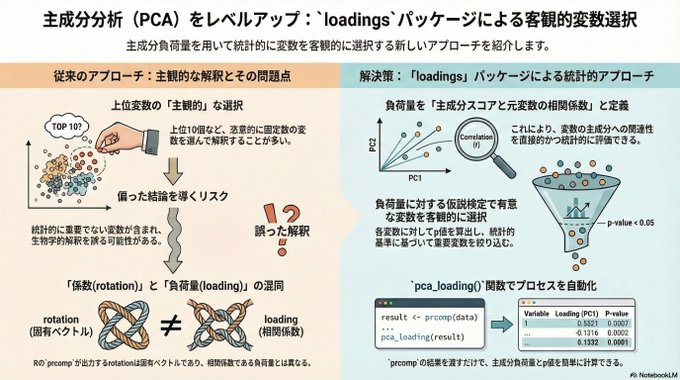

山本博之 / やまもとひろゆき / Hiroyuki Yamamoto / 連絡先 h.yama2396@gmail.com / google scholar /
研究業績 / メモ / 山形県鶴岡市 (大阪→京都→神戸→鶴岡→川崎→鶴岡) / 会社員 / データサイエンス研究・教育 /
オミックスデータの多変量解析 (詳細)



バイオデータベース活用 (詳細)


- エンリッチメント解析
- リポジトリデータ再解析(データ収集)
質量分析インフォマティクス
- 質量分析インフォマティクス研究会
- 年1回、研究会ワークショップ、ハッカソン、ソフトウェア講習会、IIBMPでのワークショップを行っています。
- Rで質量分析データを処理するための技術資料(作成中)を公開しています。
- MS/MSスペクトルデータ解析